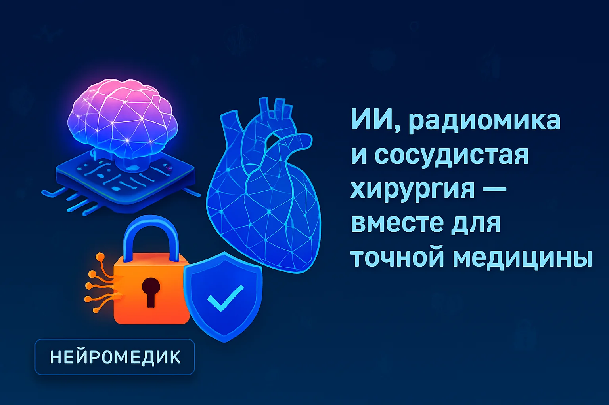
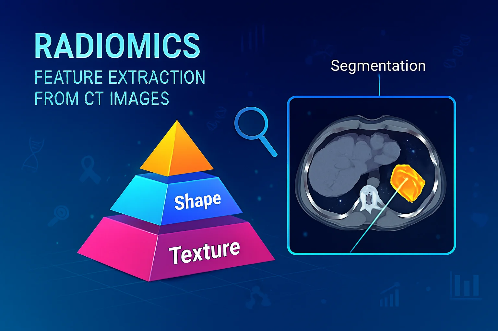
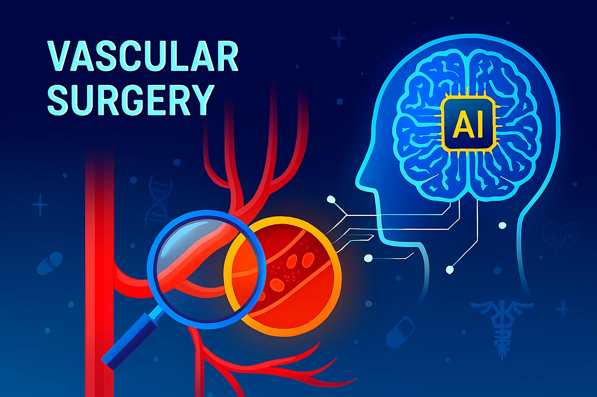

⚙️ Мои проекты

🌐 Blockchain in medical information acquisition
Блокчейн революционизирует управление и обмен медицинской информацией, создавая безопасные реестры ЭМК, оптимизируя процессы и повышая доверие в системе здравоохранения.

🤖 Сайт Neuromedic.by
Сайт Нейромедик — это современная платформа, посвящённая интеграции искусственного интеллекта, радиомики и сосудистой хирургии в медицине. Он объединяет визуальные проекты, технологические решения и научные исследования, направленные на повышение точности диагностики, эффективности лечения и безопасности данных пациентов.

🧠 Нейросеть для диагностики
AI-модель для анализа медицинских изображений и выявления патологий на основе пирадиомики.Пирадиомика — это практическое использование библиотеки PyRadiomics для извлечения текстурных, статистических и геометрических признаков из медицинских изображений (КТ, МРТ, ПЭТ и др.).

🫀 «Интеллектуальная система поддержки сосудистого хирурга»
«Интеллектуальная система поддержки сосудистого хирурга» — нейросеть анализирует КТ-снимки, выделяет патологические участки, предлагает оптимальные точки реконструкции и прогнозирует вероятность успеха операции.

🔒 Защита данных пациентов
Шифрование, авторизация и контроль доступа к медицинским записям.

🦵Реконструктивно-восстановительная хирургия сосудов нижней конечности
Реконструктивно-восстановительная хирургия сосудов нижней конечности — это высокоточная область сосудистой медицины, направленная на восстановление кровотока при нарушениях артериального и венозного русла. Такие вмешательства жизненно необходимы при критической ишемии, облитерирующих заболеваниях артерий, травмах, аневризмах и тромбозах.
Ошибки молодости в науке 🎬
Аспирационный синдром у новорождённых — это состояние, возникающее при попадании в дыхательные пути инородных масс (чаще всего мекония, околоплодных вод или молока), что приводит к дыхательным расстройствам и риску пневмонии. Оно считается одной из наиболее сложных проблем неонатологии
🎵 Музыкальный раздел
Для расслабления